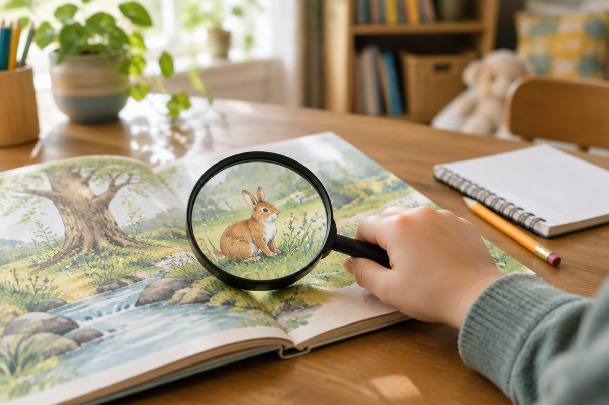

처음 보는 낱말, 뜻을 어떻게 알아낼까?

책을 읽다가 처음 보는 낱말을 만나면 그냥 건너뛰고 싶지요? 하지만 탐정처럼 단서를 찾으면 사전 없이도 뜻을 짐작할 수 있어요.
앞뒤 문장에 단서가 숨어 있어요
모르는 낱말이 나오면 그 낱말의 앞뒤 문장을 천천히 다시 읽어 보세요. 글쓴이는 낱말 둘레에 뜻을 알려 주는 단서를 남겨 두는 경우가 많아요.
이렇게 앞뒤에 이어지는 내용을 ‘문맥’이라고 해요. 문맥을 살피면 낱말이 좋은 뜻인지 나쁜 뜻인지, 무엇과 관련된 말인지 알 수 있어요.
“동생은 배가 고파서 밥을 허겁지겁 먹었어요. 숟가락이 쉴 틈이 없었어요.” → ‘허겁지겁’은 ‘아주 급하게 서두르는 모양’이라고 짐작할 수 있어요.
비슷한 말을 넣어 보아요
짐작한 뜻을 그 낱말 자리에 바꾸어 넣고 문장을 다시 읽어 보세요. 문장이 자연스러우면 짐작이 잘 맞은 거예요.
어색하다면 다른 뜻을 생각해 보고 다시 넣어 보면 돼요.
“할머니 댁 마당은 아주 널찍했어요.” → ‘넓은’을 넣어 “아주 넓었어요.”로 읽어도 자연스러워요. 그러니 ‘널찍하다’는 ‘꽤 넓다’는 뜻이에요.
낱말을 나누어 보아요
긴 낱말은 아는 부분으로 나누어 보면 뜻이 보여요. 예를 들어 ‘맨발’은 ‘맨’과 ‘발’로 나눌 수 있어요.
‘맨-’은 ‘다른 것이 없는’이라는 뜻을 더해 주어서 ‘맨발’은 양말이나 신을 신지 않은 발이에요. ‘맨손’, ‘맨눈’도 같은 방법으로 짐작할 수 있어요.
책가방 = 책 + 가방 → 책을 넣는 가방 / 눈사람 = 눈 + 사람 → 눈으로 만든 사람 모양
짐작한 뜻은 국어사전으로 확인해요
짐작은 어디까지나 짐작이에요. 마지막에는 국어사전에서 낱말을 찾아 짐작한 뜻이 맞는지 확인해 보세요.
짐작한 뜻과 사전의 뜻을 비교해 보면 낱말 실력이 쑥쑥 자라요.
짐작: ‘허겁지겁’ = 급하게 서두르는 모양 → 사전: ‘조급한 마음으로 몹시 허둥거리는 모양’
핵심 낱말
- 짐작
- 사정이나 형편을 어림잡아 헤아림
- 문맥
- 글에서 낱말이나 문장의 앞뒤로 이어지는 내용
- 단서
- 어떤 것을 알아내는 데 도움이 되는 실마리
- 비슷한 말
- 뜻이 서로 비슷한 낱말 (예: 기쁘다 - 즐겁다)
한 줄 정리
- 모르는 낱말은 앞뒤 문장(문맥)에서 단서를 찾아 뜻을 짐작해요.
- 짐작한 뜻을 낱말 자리에 넣어 자연스러운지 읽어 보거나, 낱말을 나누어 생각해요.
- 짐작한 뜻은 마지막에 국어사전으로 확인해요.